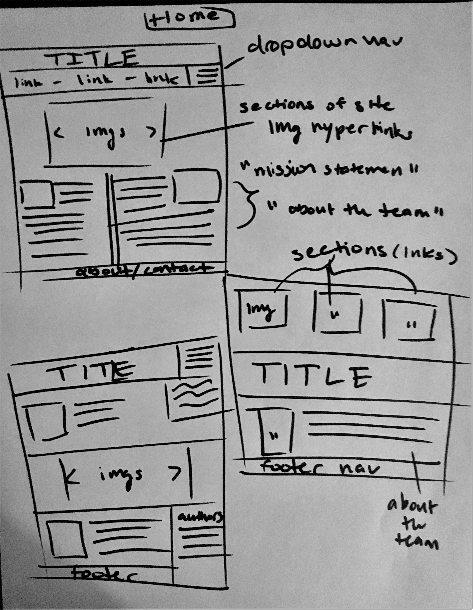
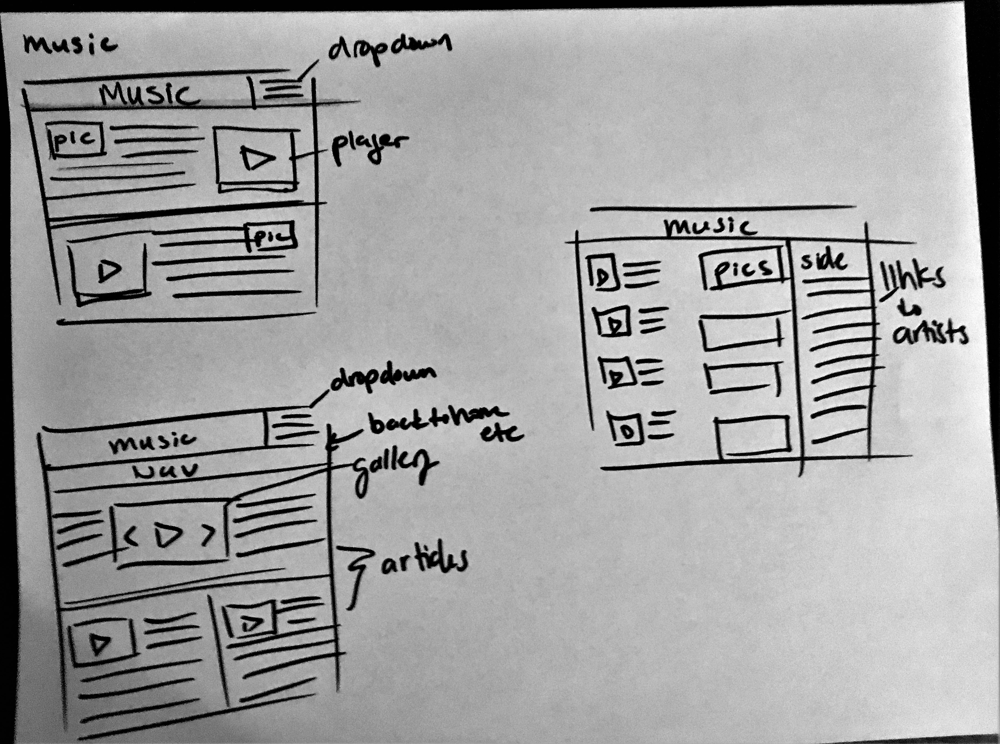
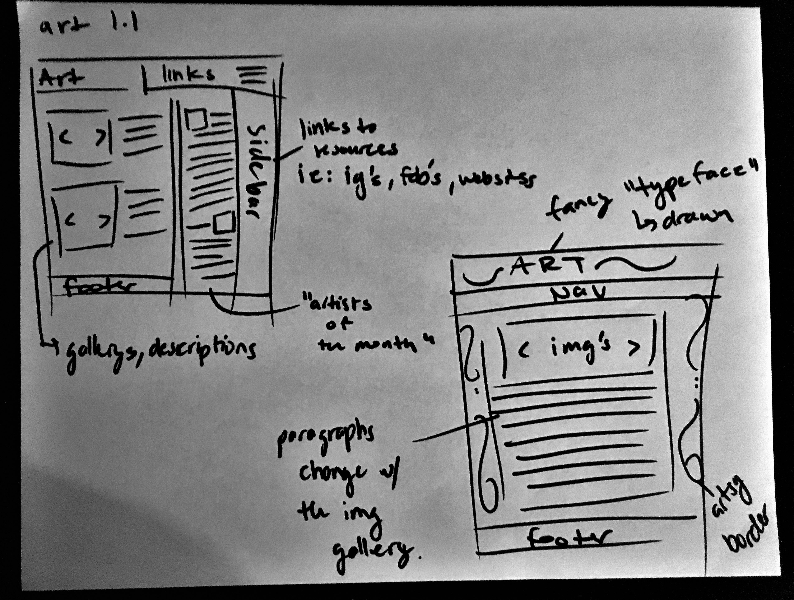
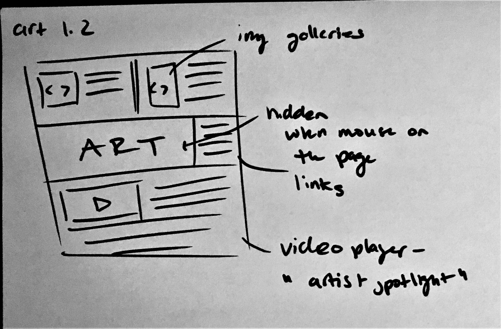
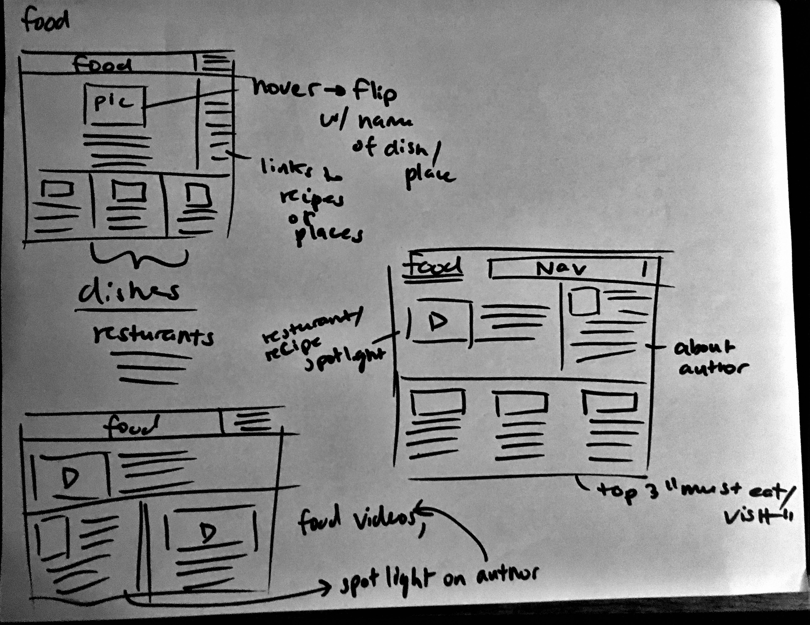
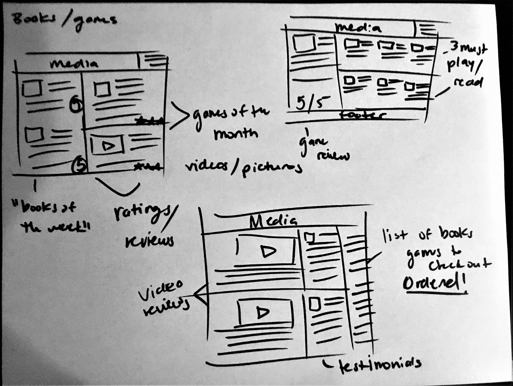

Here I have three possible sketches for the home/title page for the webzine. I am partial to the second one on the left.
The gallery combined with pictures/articles would be an eye catching layout.

I had the idea to do an artist spotlight page for the music section, and so my sketches reflect on how I would want to see a page describe an up and coming artist.
Thumbnail images of albums or singles with reviews or descriptions and then a video player running a music video for a "must hear song".


For the art page I wanted to try and replicate an almost skateboard magazine kind of feel, lots of small pictures with articles describing the art.
Maybe for details regarding the page the artists/articles highlighted could be taken from our peers, asking them which artists are on their radar.

For the food page I kind of had two ideas in mind when doing my sketches. One being a resturant focused page, highlighting specific spots or dishes at a certain resturant;
the other being focused on recipes and showing off fun foods to make and enjoy. I figured using animations such as images that flip over to the name of the dish when hovered could be a nice touch.
